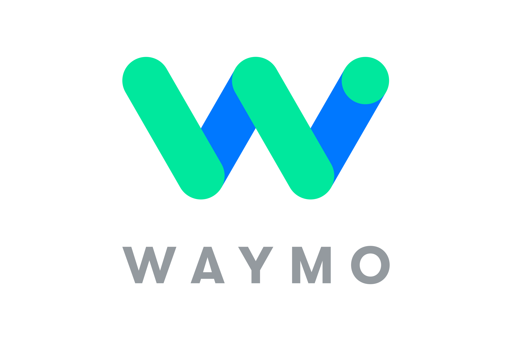
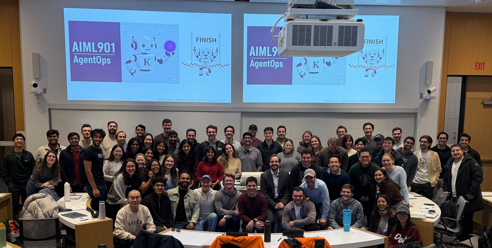
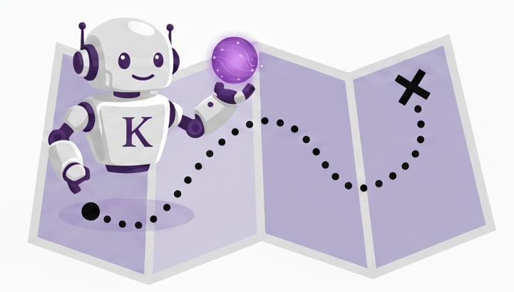
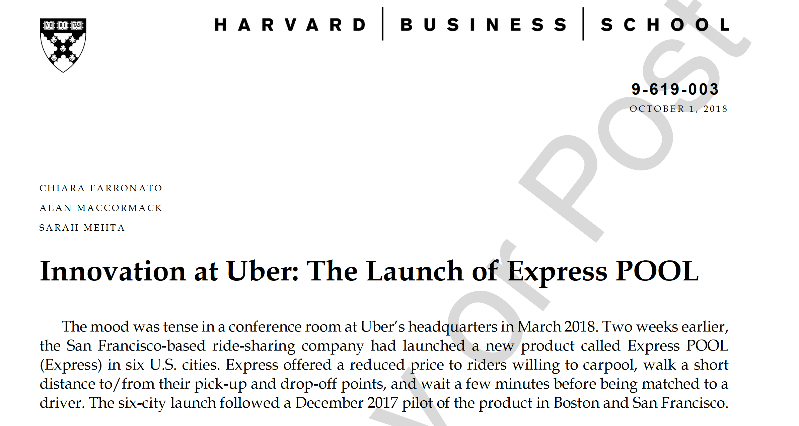
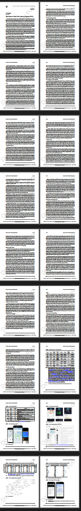
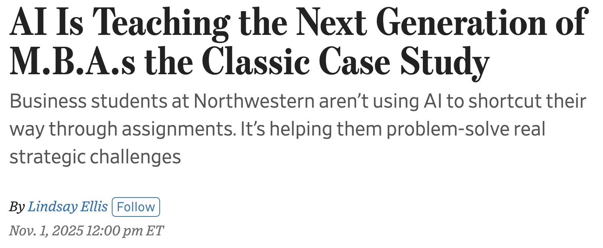

ChatGPT
LLMs can write and answer questions




NYSE: ESAB
Industrial compounder (mostly welding)
~10,000 employees around the world
~$3 billion yearly revenue
I joined the board in January.
My main focus: their AI strategy.



